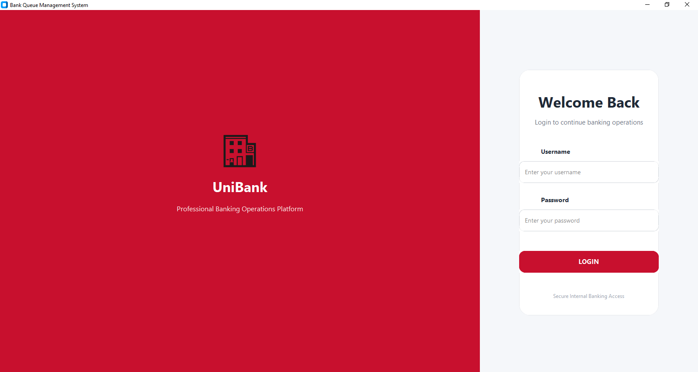
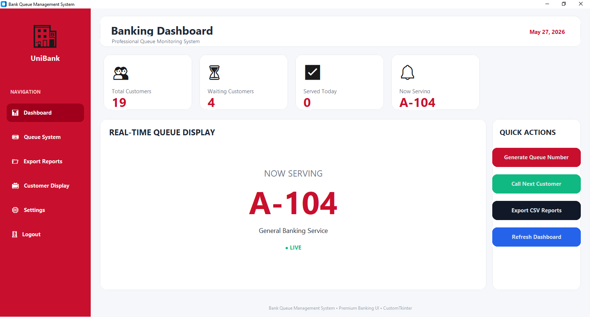
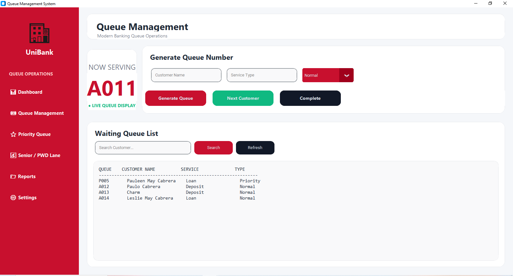
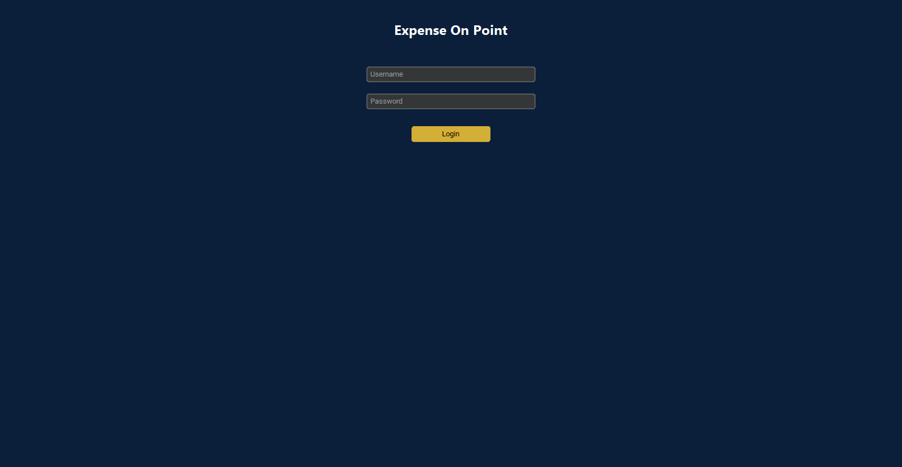
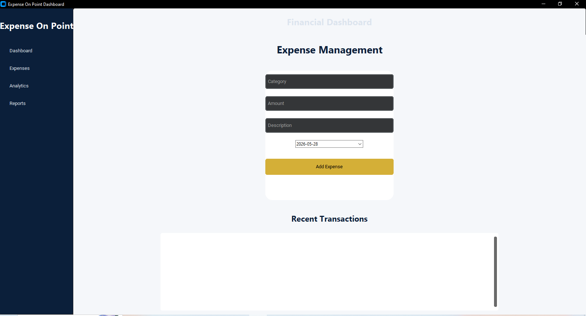

BS Information Technology | Cybersecurity Student
A simulation-based queue system designed to improve customer flow in a banking environment.
View Repository


Stack: Python, Tkinter / CustomTkinter
Highlights: Ticket-based queue generation, Service counter management
A desktop application for managing income and expenses with local database storage.
View Repository

Stack: Python, SQLite, CustomTkinter
Highlights: CRUD transactions, categorized tracking
GitHub: Profile
Email: pauloacabreraa06@gmail.com